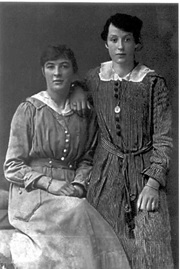
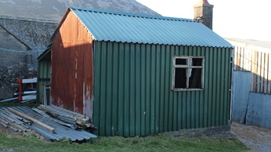

Shop
Fron was let to Mari, and her husband William Gruffydd. Mari ran a successful shop here, selling everything you could think of, and you could even buy tailor fitted suits in Mari’s shop. William Gruffudd used to travel on his bike, or a motorbike and sidecar, to take customers’ measurements. The shop sold anything you could think of and seemed to be unorganised. However, Mari knew exactly where everything was. John James, the cobbler, came to live here in later years.
Mari Fron and Lydia Worsley.
Eurwen Jones remembers that Mari Fron’s shop used to sell home spun yarn. Gwyn, Plas said that her shop sold clothes. Mari Fron had a gold tooth. In the 1940s, you could get any sort of clothes from Mari Fron’s shop, including bloomers, and she often used to stand outside the shop (a zinc hut) in her white coat. After Mari left Fron, John James, the cobbler came to live there. He had a wooden leg. According to Adam Hughes, William and Mari moved to Blaenau, a nearby farm, and their son, Alan Jones, was well respected in the sheepdog trials circles, having won many national prizes.
Aled Williams, Gorslwyd, compiled the following stories, with the kind assistance of Lydia Thomas (Lydia Pritchard, Blaenau):
For a time Fron was the home of Ifan Pritchard (1979 - 1952) and his wife Maggie, the parents of Laura (Trefor), Olwen Ethel (Dolwen) and Nel (Pen y Graig). After they moved, they let Fron to Mari, Jane’s daughter, who was Ifan’s sister. Mari, (known as Mari Fron, locally, or as my father, her second cousin, would call her, Bloody Mary) lived there with her husband, William Gruffudd and their son Alan (Alan Fron, from Lleuar Bach later in life). Alan Jones became well known as an expert in sheepdog racing, and he was the only one I remember in Llithfaen, that owned a Jaguar motor car in the late 1950s.
Mari ran a successful shop there, selling everything imaginable, including tailor-made, fitted suits. William Gruffudd travelled on his bike for miles around the area to measure his customers. The shop was like Aladdin’s cave and looked very disorganised, but Mari could lay her hand on anything you wanted. Some goods used to arrive, thanks to special arrangements made with the Captains of the Coasters that called into the nearby port of Nant Gwyrtheyrn, to load granite setts that were bound for Liverpool and Bristol. The sailors used to love having tasty Welsh produce in return, such as meat. The population of the Lleyn Peninsula, with many of its coastal towns and villages, were fashionably dressed, emulating the fashions of the day in the cities. Sea trade was much easier than the winding roads in those days.
Fron also had a spectacular garden, in a shady area above the house. William Gruffudd carried animal manure from nearby farms to fertilize the soil in Fron, which meant that the garden was ideally suited for growing crops. He also used chalk to neutralize the peaty acidic soil. He grew fruit and vegetables year after year, he had an apple tree and unusually a grape tree.
Lydia remembers visiting Fron with her mother, Blodwen Pritchard (Blaenau), and whilst the adults chatted, Lydia used to explore the garden. William Gruffudd had left an apple on the tre that year, for it to grow and perhaps win a prize, but its colour and size was to much of a temptation for a mischievous young girl, and she had a very good time tucking into it iin the autumn sun. she returned into the house with the core, feeling very guilty, and surprised that she wasn’t on the receiving end of Mari’s sharp tongue.
In time, Mari, William Gruffudd and Alan moved to Blaenau Canol. After that, Twm Ellis and his wife Bessie, John and Len’s parents lived in Fron, before moving to Plas, further down the road, when the boys were young.
This is Mary Fron’s original shop which is a shed in Tan yr Hafod.
I remember John James living there. He was a small, very amiable bachelor, and he always had something interesting to say. He had a very keen interest in the latest technology. He always wore his brown hat, and used to tease me, by lifting my cap up by the little metal button in the centre. He was very lame, but he had no trouble managing the hill from the village to Fron. His brother, Robin William, worked as a settsman in the quarry, and I remember him helping Caradog Jones, Tyn y Mynydd, to erect a boundary fence between the houses in Caernant and the mountain wall. He always had a pipe in his mouth. Fairly regular, he would have a visit from the twins in Llandudno, and they used to park their black, Ford Pilot V8 close to the house. One was born on the last day in May, and the other early in the first of June. It is for that reason they were called May and June.
Before my time, John James worked as a cobbler in his workshop on the other side of the hill, in front of the house. I only remember the steps and the concrete paving (which is partly still there). The workshop moved to yr Hafod, where it was used to build a single floored house nearby.
Having a chat with John James on my way home from school was a highlight for me. As I mentioned, he had a keen interest in technology, and he often had interesting ideas and very probing questions. He was a good influence on me, as I was an aspiring scientist. In those days, for example, a flashlamp was essential, and John James believed he could breathe new life into flashlamps by making a small incision in them and pouring a little water inside. He would then leave the flashlamp by the range oven to warm up. At the time, I used to make fun of him, but as I learnt more about batteries, it is true that they’re more efficient when warm, but I’m still sceptical about the water.